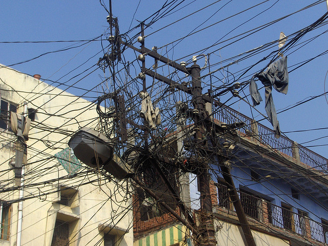

Are You Testing Me?
Behavioral, unit, and maintainability testing
Nate Swart
Technical Consultant, Acquia
@nateswart | nate.swart@acquia.com
Why Test?
 Electrical nightmare by daviddumas, Flickr
Don't think of it as threatening
- 'Test' is not a bad word
- Reassurance
- Validation

Photo ©2010 J. Ronald Lee.
Module Evaluation
- New modules
- Custom development
- Unfamiliar modules via historical performance
Automation Overview
Un-Manualification by flattop341, Flickr
Overall Process
Git Master
- VCS is key
- Git makes this easy (distributed)
- Develop locally
- Execute tests when you push to master
Cloud Hooks
- Acquia Cloud technology
- www.acquia.com/acquia-cloud-free
- Github
- help.github.com/articles/post-receive-hooks
Installing Cloud Hooks
cd /my/repo
curl -L -o hooks.tar.gz https://github.com/acquia/cloud-hooks/tarball/master
tar xzf hooks.tar.gz
mv acquia-cloud-hooks-* hooks
git add hooks
git commit -m 'Import Cloud hooks directory and sample scripts.'
git push
Sample Cloud Hook
#!/bin/sh
#
# Cloud Hook: update-db
#
# Run drush updatedb in the target environment. This script works as
# any Cloud hook.
site="$1"
target_env="$2"
drush @$site.$target_env updatedb --yes
Demo
Unit Testing
Blocks by mag3737, Flickr
Build the system right
Simpletest
- Built-in to D7
- 100% test coverage in core
- Many contrib modules (i.e. Views)
Running a Simpletest
drush test-run Bootstrap
drush test-run Menu
drush test-run Cache
... you get the picture
Demo
BDD
We need more behavioral testing!
Involve your Business Users
Gherkin
Feature: Some terse yet descriptive text of what is desired
In order to realize a named business value
As an explicit system actor
I want to gain some beneficial outcome which furthers the goal
Scenario: Some determinable business situation
Given some precondition
And some other precondition
When some action by the actor
And some other action
Then some testable outcome is achieved
Alfred Nutile
Gerhkin Generator
Demo
Code Quality
- PHPLOC
- PHP Mess Detector
- PHP Code Sniffer
PHPLOC
- Files, directories
- Lines of code, comments, non-commented
- Method calls, constants, etc
- Cyclomatic complexity
Demo
QA?
Test Well by ~db~, Flickr